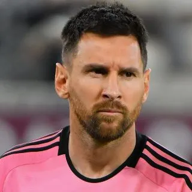

Lionel Messi
Considerado por muchos como el mejor futbolista de todos los tiempos, Messi ha marcado una era en el fútbol con su habilidad técnica, visión de juego y récords impresionantes. Ha ganado múltiples Balones de Oro y ha llevado al Barcelona y a la selección argentina a victorias inolvidables.
- Edad: 36 años
- Club actual: Inter Miami CF
- Títulos ganados: 7 Balones de Oro, 4 Champions League, Copa América 2021